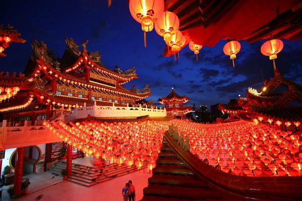
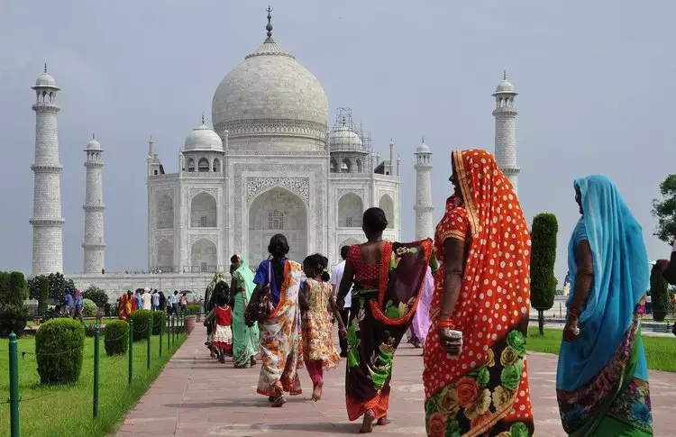
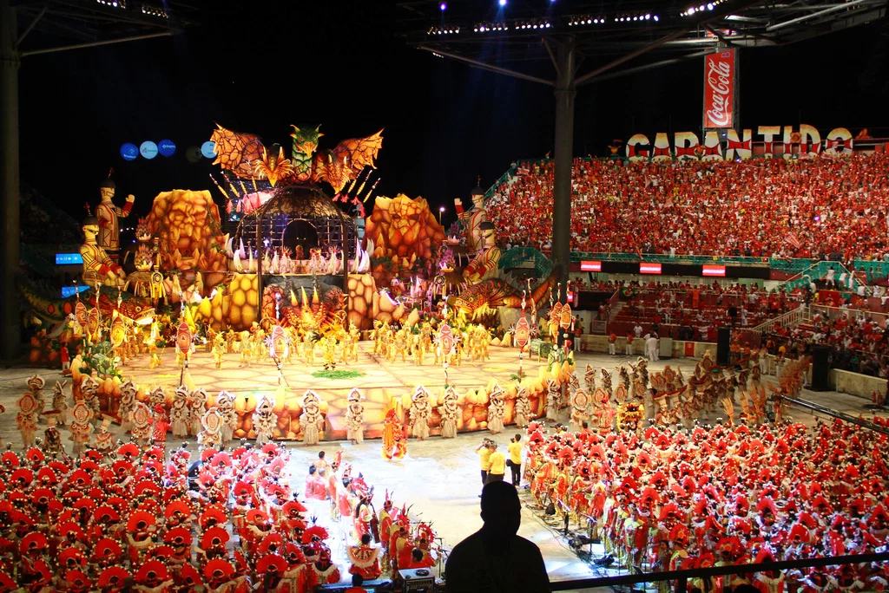
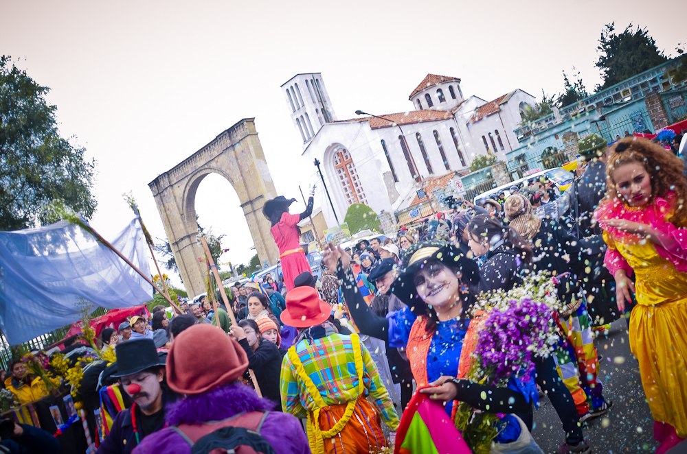

Japonesa
Região: Ásia Oriental
Pratos típicos: Sushi, Ramen, Takoyaki

Região: Ásia Oriental
Pratos típicos: Dim Sum, Pato Pequim, Mapo Tofu

Região: Sul da Ásia
Pratos típicos: Curry, Naan, Biryani
Região: Ásia Oriental
Pratos típicos: Sushi, Ramen, Takoyaki

Região: América do Sul
Pratos típicos: Feijoada, Pão de Queijo, Moqueca

Região: América Latina
Pratos típicos: Arepa, Ceviche, Empanada

A cultura chinesa é uma das mais antigas do mundo, com mais de 5.000 anos de história. Rica em filosofia, arte, literatura e tradições, influenciou profundamente toda a Ásia. Confucionismo, taoismo e budismo são pilares de sua identidade cultural.

O Ano Novo Chinês é a festa mais importante da China, celebrada com fogos de artifício, danças do dragão, envelopes vermelhos com dinheiro e reuniões familiares. Dura 15 dias e é comemorado por mais de 1 bilhão de pessoas ao redor do mundo.

O Pato de Pequim é um dos pratos mais famosos da China, com receita que data do século XIV. A pele é crocante e dourada, servida com panquecas finas, cebolinha e molho hoisin. É um símbolo da culinária imperial chinesa.

A Índia é um dos berços da civilização humana, com uma cultura de mais de 4.000 anos. É o país com mais diversidade religiosa do mundo, lar do hinduísmo, budismo, islamismo e sikhismo. Sua riqueza em dança, música, arquitetura e gastronomia é incomparável.

O Holi é o festival das cores, celebrado na primavera indiana com jogos de pó colorido, música e dança. Representa a vitória do bem sobre o mal e a chegada de uma nova estação. É uma das festas mais alegres e coloridas do mundo.

O Biryani é um prato aromático de arroz cozido com especiarias, ervas e carne ou legumes. Originário da culinária mogol, tornou-se um dos pratos mais amados da Índia, com variações regionais de norte a sul do país.

A cultura japonesa é uma fascinante mistura de tradição milenar e modernidade tecnológica. Do teatro Nô ao anime, dos templos xintoístas às metrópoles futuristas, o Japão encanta pelo respeito às tradições e pela inovação constante.

O Hanami é a tradição japonesa de apreciar as flores de cerejeira (sakura) na primavera. Famílias e amigos se reúnem em parques para fazer piqueniques sob as cerejeiras floridas, celebrando a beleza efêmera da natureza e a renovação da vida.

O sushi é o prato japonês mais famoso no mundo, feito com arroz temperado com vinagre e acompanhado de frutos do mar frescos ou vegetais. Muito mais que comida, é uma forma de arte que exige anos de treinamento para ser dominada.

A cultura brasileira é uma rica mistura de influências indígenas, africanas e europeias. Essa fusão criou uma identidade única expressa no samba, no carnaval, na capoeira, na literatura e na gastronomia. O Brasil é conhecido pela alegria, criatividade e hospitalidade do seu povo.

O Carnaval brasileiro é a maior festa popular do mundo, com desfiles de escolas de samba, blocos de rua e festividades que tomam conta do país por dias. Rio de Janeiro e Salvador são os destinos mais famosos, atraindo milhões de turistas todo ano.

O pão de queijo é um dos símbolos da culinária mineira, feito com polvilho azedo ou doce e queijo minas. Crocante por fora e macio por dentro, é presença obrigatória no café da manhã brasileiro e conquistou o mundo inteiro.

A cultura latina abrange os países da América Latina, unidos pelo idioma espanhol ou português e por raízes históricas comuns. É marcada pela música apaixonada, dança vibrante, família unida e uma gastronomia diversa e saborosa.

O Dia de los Muertos é uma celebração mexicana de origem pré-colombiana, reconhecida como Patrimônio Cultural Imaterial pela UNESCO. Famílias montam altares com flores, comidas e fotos dos entes queridos falecidos para honrar e celebrar suas memórias.

O ceviche é o prato nacional do Peru e um dos mais famosos da América Latina. Feito com peixe cru marinado em suco de limão, cebola roxa, coentro e pimenta, é refrescante, leve e cheio de sabor. É Patrimônio Cultural do Peru.